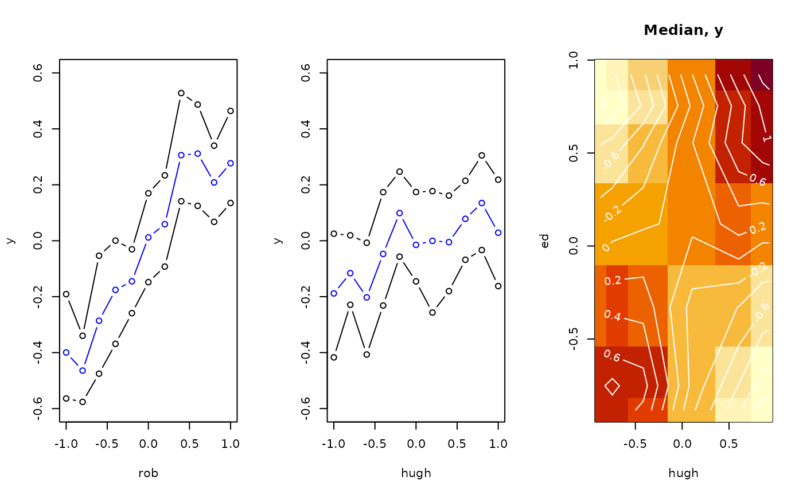

Partial Dependence Plots for BART
pdbart.RdFit a model with bart, or take a fit or sampler, and average its predictions over a set of rows with one variable (pdbart) or a pair of variables (pd2bart) set to each of a grid of values, so that a plot can display that variable's effect. By default the averages are on the scale of the model's linear predictor: if \(y\) is binary with \(P(Y=1 | x) = F(f(x))\), \(F\) the standard normal cdf, then the plots are on the \(f\) scale; type chooses another.
Usage
pdbart(
formula, data,
xind = NULL,
levs = NULL, levquants = c(0.05, seq(0.1, 0.9, 0.1), 0.95),
pl = TRUE, plquants = c(0.05, 0.95),
type = "auto", newdata = NULL,
n.average.rows = NULL, average.weights = NULL,
...)
# S3 method for class 'pdbart'
plot(
x,
xind = seq_along(x$fd),
plquants = c(0.05, 0.95), cols = c('blue', 'black'),
...)
pd2bart(
formula, data,
xind = NULL,
levs = NULL, levquants = c(0.05, seq(0.1, 0.9, 0.1), 0.95),
pl = TRUE, plquants = c(0.05, 0.95),
type = "auto", newdata = NULL,
n.average.rows = NULL, average.weights = NULL,
...)
# S3 method for class 'pd2bart'
plot(
x,
plquants = c(0.05, 0.95), contour.color = 'white',
justmedian = TRUE,
...)Arguments
- formula
The data to fit, as
bart's ownformula: a matrix, data frame or formula. Also accepted are a fittedbartmodel kept withkeepTrees = TRUE, or adbartsSampler, passed first. Abartmodel kept without its trees or sampler is refit from its stored call by the function that made it, with a warning of classdbartsFallbackWarning, and is refused if no call was kept; a sampler withoutkeepTreesis run, generating fresh samples and changing its state, with the same warning.- data
As
bart'sdata: the response whenformulais a matrix, or the data frame in which to evaluate a formula. Not used with a fit or sampler.- xind
Integer, character vector, or the right-hand side of a formula indicating which variables are to be plotted. In a formula fit, these are variables of the data, named, and every term built from one -
log(a),poly(a, 2)- moves with it; a column number is refused. Otherwise, inpdbart, corresponds to the variables (columns of the predictor matrix) for which a plot is to be constructed. Inplot.pdbart, corresponds to the indices in list returned bypdbartfor which plot is to be constructed. Inpd2bart, the indices of a pair of variables (columns of the predictor matrix) to plot. IfNULLa default of all columns is used forpdbartand the first two columns is used forpd2bart.- levs
Gives the values of a variable at which the plot is to be constructed. Must be a list, where the \(i\)th component gives the values for the \(i\)th variable. In
pdbart, it should have same length asxind. Inpd2bart, it should have length 2. The values of a factor predictor are level names. See also argumentlevquants.- levquants
If
levsisNULL, the values of each variable used in the plot are set to the quantiles indicated by levquants of its values in the training data, or innewdatawhen given, missing values left out; a factor predictor takes every level the fit knows. Must be a vector of numeric type.- pl
For
pdbartandpd2bart, ifTRUE, plot is subsequently made (by callingplot.*).- plquants
In the plots, beliefs about \(f(x)\) are indicated by plotting the posterior median and a lower and upper quantile.
plquantsis a double vector of length two giving the lower and upper quantiles.- type
The scale averaged on, one of
predict's types for the fit (seepredict.bart), each row's prediction transformed and then averaged."auto"is the link scale,"bart"(also spelled"link"), on every family but the hurdle, where it is the mean response,"ev". A gaussian or Student-t fit also takes"ev","ppd"and, with a variance forest,"sigma"; a probit or logistic fit"ev", the probability, and"ppd"; a negative binomial fit"ev", the mean count, and"ppd"; a hurdle fit"prob", the probability of a positive response,"bart"(also"log"), the positive part's log scale, and"ppd". A type the family does not take is refused before anything is fit when the family is named."forest"is refused. A sampler passed in takes only"bart".- newdata
Rows to average over in place of the fit's own, coded as
predictcodes them, a data frame in a formula fit. The fit's offset is evaluated on them aspredictevaluates it; an offset given as a plain vector cannot be, unlessnewdatahas as many rows, and is refused. The default grid is taken from these rows.- n.average.rows
A number of the fit's rows to average over, drawn at random without replacement from those with a positive
average.weights(all rows when none are given);set.seedbeforehand reproduces it. Refused withnewdata.- average.weights
One finite, non-negative weight per row averaged over - per row of the fit, before any it gives a weight of 0 are left out, or per row of
newdata- not all zero, for a weighted average; normalized. Withn.average.rows, the sampled rows keep their weights, renormalized. Notbart'sweights, which go to the fit.- ...
In
pdbartandpd2bart, arguments ofbart, under its names and with its defaults; an argumentbartdoes not take is an error.pdbartsetskeepTreesandsamplerOnlyitself and has no test rows, sokeepTrees = FALSE,samplerOnly,testandoffset.testare refused;keepSampler = FALSEdrops the sampler from the result. With a fit or sampler passed in, onlykeepSampleris taken, and a sampler takes nonewdata,n.average.rowsoraverage.weights. BayesTree's spellings, asbartBTtakes them (x.train,y.train,ntree,ndpost,nskip,keepevery,binaryOffsetand the rest), are translated tobart's with a once-per-session warning until dbarts 1.1-0, when they are refused;power,baseandsplitprobsbecometree.prior = cgm(), andproposalprobsthe control'sproposal.probs. A setting given under both spellings is refused.In
plot.pdbart, arguments are passed on toplot, excepttype, which is passed to the lines drawn, andxlabandylab, which replace the method's own labels, the vertical one naming the scale. Inplot.pd2bart, they are passed on toimage, and amainreplaces the panel titles.- x
For
plot.*, object returned frompdbartorpd2bart.- cols
Vector of two colors. The first color is for the median of \(f\), while the second color is for the upper and lower quantiles.
- contour.color
Color for contours plotted on top of the image.
- justmedian
A logical where if
TRUEjust one plot is created for the median of \(f(x)\) draws. IfFALSE, three plots are created one for the median and two additional ones for the lower and upper quantiles. In this case,mfrowis set toc(1,3).
Details
We divide the predictor vector \(x\) into a subgroup of interest, \(x_s\) and the complement \(x_c = x \setminus x_s\). A prediction \(f(x)\) can then be written as \(f(x_s, x_c)\). To estimate the effect of \(x_s\) on the prediction, Friedman suggests the partial dependence function $$f_s(x_s) = \frac{1}{n}\sum_{i=1}^n f(x_s,x_{ic})$$ where \(x_{ic}\) is the \(i\)th observation of \(x_c\) in the data. Note that \((x_s, x_{ic})\) will generally not be one of the observed data points. Using BART it is straightforward to then estimate and even obtain uncertainty bounds for \(f_s(x_s)\). A draw of \(f^*_s(x_s)\) from the induced BART posterior on \(f_s(x_s)\) is obtained by simply computing \(f^*_s(x_s)\) as a byproduct of each MCMC draw \(f^*\). The median (or average) of these MCMC draws \(f^*_s(x_s)\) then yields an estimate of \(f_s(x_s)\), and lower and upper quantiles can be used to obtain intervals for \(f_s(x_s)\).
In pdbart \(x_s\) consists of a single variable in \(x\) and in pd2bart it is a pair of variables.
The rows averaged over are the fit's own unless newdata is given: those it was fit to, less any it gives a weight of 0, which for a binary response masks a row out, and less any dropped for a missing response. In a formula fit they are read from the data the fit's call names, re-evaluated, which a fit kept without its call cannot do; give newdata then. Each row's offset is added to its prediction once: the fit's offset expression or offset() term evaluated on the row with the variable set, or, for an offset given as a plain vector, the row's own value. A value is therefore the (weighted) row mean of predict(fit, rows, type = type) with the variable set.
In pd2bart, when the fit has two predictors and one offset for every row, each grid point is a single row and is predicted once; newdata then gives only the default grid, and n.average.rows and average.weights have no effect, with a warning. type = "ppd", which draws noise for each row, always averages over the rows.
A data call fits through bart at its defaults, keeping trees and sampler, and predicts each grid value from the saved trees, so pdbart(x, y, seed = s) and pdbart(bart(x, y, seed = s, keepTrees = TRUE)) agree. pdbart(bartBT(x, y, keeptrees = TRUE)) gives the model dbarts 0.9-34 fit. The first data call in a session prints a message saying so; a call from package code does not.
pdbart and pd2bart serve gaussian, Student-t, probit, logistic, negative binomial and hurdle fits. Multinomial and ordinal fits, whose prediction is a probability per category, are refused; predict on rows with the variable set gives each category's. Accelerated failure time and hazard fits are refused in this version. Each refusal comes before anything is fit, whether the family is named, resolved by family = "auto" from the response, or that of a fit or sampler passed in.
This is a computationally intensive procedure. For example, in pdbart, to compute the partial dependence plot for 5 \(x_s\) values, we need to compute \(f(x_s, x_c)\) for all possible \((x_s, x_{ic})\) and there would be \(5n\) of these where \(n\) is the sample size. All of that computation would be done for each kept BART draw. For this reason thinning the draws with n.thin larger than 1 (eg. 10) makes the procedure much faster.
Value
The plot methods produce the plots and don't return anything.
pdbart and pd2bart return lists with components given below. The list returned by pdbart is assigned class pdbart and the list returned by pd2bart is assigned class pd2bart. The class carries a plot method only; it is not a fit, so predict, extract, fitted, and residuals are not defined for it (fitted and residuals fall through to stats' defaults and return NULL).
- fd
A matrix whose \((i, j)\) value is the \(i\)th draw of \(f_s(x_s)\) for the \(j\)th value of \(x_s\). “fd” is for “function draws”.
For
pdbartfdis actually a list whose \(k\)th component is the matrix described above corresponding to the \(k\)th variable chosen by argumentxind. The number of columns in each matrix will equal the number of values given in the corresponding component of argumentlevs(or number of values inlevquants).For
pd2bart,fdis a single matrix. The columns correspond to all possible pairs of values for the pair of variables indicated byxind. That is, all possible \((x_i, x_j)\) where \(x_i\) is a value in the levs component corresponding to the first \(x\) and \(x_j\) is a value in the levs components corresponding to the second one. The first \(x\) changes first.The draws of every chain are merged, each chain's in turn. When the fit keeps its chains apart (
combineChains = FALSEwith more than one chain), each matrix gains a leading chain margin, chains x draws x values, as the fit's own components do.- levs
The list of levels used, each component corresponding to a variable. If argument
levswas supplied it is unchanged. Otherwise, the levels inlevsare as constructed using argumentlevquants, or a factor predictor's level names. A factor predictor is plotted with one point and interval per level, and without contours inplot.pd2bart.- xlbs
A vector of character strings which are the plotting labels used for the variables.
- n.chains
The number of chains.
- type
The scale averaged on, as resolved:
"bart"for"link"and, except on a hurdle fit, for"auto".- family
The fit's family, which with
typesets the plot labels.
The remaining components are passed on from the fit, under bart's own names (see its ‘Value’ section) with one rename and several omissions - the fit's call is under bartcall rather than call, and not every bart component is carried over. For a continuous response the remaining components are bartcall, yhat.train, first.sigma, sigma, yhat.train.mean, sigest, y, and fit, the sampler, which keepSampler = FALSE leaves out. For a binary response only bartcall, yhat.train, y, and fit are present. For a hurdle fit, fit is a list of the two parts' samplers, zero and positive, and no draws are carried over. pd2bart follows the same rules. The function plot.bart can be applied to the object returned by pdbart or pd2bart to examine the BART run.
References
Chipman, H., George, E., and McCulloch, R. (2010) BART: Bayesian additive regression trees. The Annals of Applied Statistics, 4(1), 266–298. doi:10.1214/09-AOAS285 .
Chipman, H., George, E., and McCulloch R. (2006) Bayesian Ensemble Learning. Advances in Neural Information Processing Systems 19, Scholkopf, Platt and Hoffman, Eds., MIT Press, Cambridge, MA, 265-272. https://www.rob-mcculloch.org/
Friedman, J.H. (2001) Greedy function approximation: A gradient boosting machine. The Annals of Statistics, 29, 1189–1232.
Author
Hugh Chipman: hugh.chipman@gmail.com.
Robert McCulloch: robert.mcculloch1@gmail.com.
Examples
## simulate data
f <- function(x)
return(0.5 * x[,1] + 2 * x[,2] * x[,3])
sigma <- 0.2
n <- 100
set.seed(27)
x <- matrix(2 * runif(n * 3) - 1, ncol = 3)
colnames(x) <- c('rob', 'hugh', 'ed')
Ey <- f(x)
y <- rnorm(n, Ey, sigma)
# \donttest{
## pdbart: one dimensional partial dependence plot
pdb1 <- pdbart(
x, y, xind = c(1, 2),
levs = list(seq(-1, 1, 0.2), seq(-1, 1, 0.2)),
pl = FALSE, n.thin = 10, n.trees = 100, n.chains = 2, n.threads = 1,
seed = 99, verbose = FALSE
)
#> dbarts: 'pdbart' and 'pd2bart' fit through 'bart', with its defaults (75 trees; four chains, their draws merged) rather than those of 0.9-x (200 trees, one chain). pdbart(bartBT(x, y, keeptrees = TRUE)) gives the 0.9-34 model. Shown once per session until dbarts 1.1-0.
## pd2bart: two dimensional partial dependence plot
pdb2 <- pd2bart(
x, y, xind = c(2, 3),
levquants = c(0.05, 0.1, 0.25, 0.5, 0.75, 0.9, 0.95),
pl = FALSE, n.thin = 10, n.trees = 100, n.chains = 2, n.threads = 1,
seed = 99, verbose = FALSE)
## the plot methods draw into the current device, so set up the layout and
## put the caller's graphical parameters back afterwards. The first two plot
## regions are for pdbart, the third for pd2bart.
oldpar <- par(no.readonly = TRUE)
par(mfrow = c(1, 3))
plot(pdb1, ylim = c(-0.6, 0.6))
plot(pdb2)

par(oldpar)
## compare BART fit to linear model and truth = Ey
lmFit <- lm(y ~ ., data.frame(x, y))
fitmat <- cbind(y, Ey, lmFit$fitted, pdb1$yhat.train.mean)
colnames(fitmat) <- c('y', 'Ey', 'lm', 'bart')
print(cor(fitmat))
#> y Ey lm bart
#> y 1.0000000 0.9603886 0.4052732 0.9905071
#> Ey 0.9603886 1.0000000 0.4457354 0.9807678
#> lm 0.4052732 0.4457354 1.0000000 0.4336752
#> bart 0.9905071 0.9807678 0.4336752 1.0000000
# }
# \donttest{
## example showing the use of a pre-fitted model
df <- data.frame(y, x)
bartFit <- bart(
y ~ rob + hugh + ed, df,
n.thin = 10, n.trees = 100, n.chains = 2, n.threads = 1, seed = 99,
keepTrees = TRUE, verbose = FALSE)
pdb3 <- pdbart(bartFit, xind = rob + ed, pl = FALSE)
## averaged over a subgroup's rows, with the grid from them
pdb4 <- pdbart(bartFit, xind = "rob", newdata = df[df$hugh > 0, ], pl = FALSE)
# }